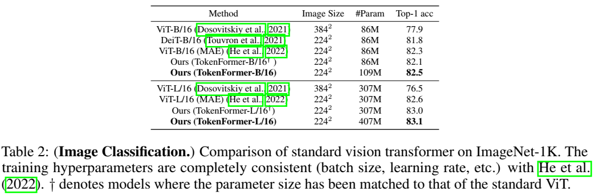

论文阅读十四：TOKENFORMER：用标记化模型参数重新思考Transformer缩放
摘要
Transformers已经成为基础模型的主导架构，由于它们在各种领域的优越性能。然而，这些模型的大量扩展成本仍然是一个值得关注的问题。这个问题主要起源于它们依赖于线性投影中的固定参数数量。当引入架构修改（如，通道维度），整个模型通常需要重新开始训练。随着模型尺寸继续增长，这种策略导致不但增长的高计算成本，从而变得不可持续。为了克服这个问题，我们引入Tokenformer，一个原生可扩展的架构，其注意力机制不仅用于输入标记之间的计算，而且用于标记和模型参数之间的交互，从而增强了架构的灵活性。通过将模型参数看待为标记，我们将Transformers中所有线性投影替换为我们的标记-参数注意力层，其中输入标记作为查询，模型参数作为键和值。这种重构允许渐进和高效扩展，而无需从头再训练。我们的模型通过增量添加新的键值参数对从124M扩展到1.4B参数，取得可比拟于从头开始训练的Transformers的性能，同时极大减少训练成本。代码和模型在：https://github.com/Haiyang-W/TokenFormer 。
引言
设计强大的神经网络架构是机器学习中的长期目标。基础模型（FMs）的最近发展已经证明Transformers(Vaswani等，2017)作为通用计算架构的潜力。由于它们的灵活性和可扩展性，Transformers已经取得各种领域的先进性能，包括自然语言处理（NLP）（Radford等，2018；Alec等，2019；Brown等，2020），视觉模型（Dosovitskiy等，2021；Liu等，2021），视觉语言（Liu等，2023；Wang等，2024）、图表示（Ying等，2021）和3D视觉（Wang等，2023a;b）。
Transformers通常将处理单个标记所需的计算分解到两个不同的部分：与其他标记交互（标记间交互，token-token interaction）和涉及模型参数的计算（标记-参数交互，token-parameter interaction）。注意力机制（Vaswani等，2017）促进标记间交互，允许当代通用目的基础模型编码多模态数据到统一的标记序列，高效捕捉它们之间的复杂依赖（Liu等，2023；Zhu等，2023；Wang等，2023d）。相反，标记-参数计算严重依赖于线性投影（Dunford & Schwartz，1988），其中输入标记被一组固定参数相乘。这种规定涉及限制了扩展性，因为随着模型尺寸增长，需要修改核心架构组件，常常必须重新从头训练整个模型。随着模型变得更大，这导致大量资源消耗，使其越来越不实际。本文中，我们介绍一种新颖的架构，实现标记-参数交互的灵活性，允许模型参数增量扩展，并且有效地重复利用先前的训练模型，从而显著减少训练负担。
为实现这个目标，我们引入Tokenformer，一种新颖的架构，它统一了标记间计算和标记-参数交互，通过整体应用注意力机制。我们标记-参数注意力层的灵活性，以及它处理可变参数数量的能力，内在地增强了模型的可扩展性，促进了逐步高效的扩展。
如图1所示，我们通过保留标记间的计算模式，同时使用交叉注意力机制重构所有线性投影扩展Transformer架构。具体来说，为了投影具有输入和输出维度D1和D2的特征，我们使用了两组参数，每组参数分别包括N个通道维度为D1和D2的可学习的标记。在这种形式中，输入标记作为查询，模型参数作为键和值。这种灵活性使我们的模型参数具有内在的可扩展性，可以通过不断添加新的键值参数对来实现高效扩展。图11展示了我们的模型可以增量地从124M扩展到1.4B参数，取得类似于从头开始训练的性能，同时节省超过一半的训练成本。
这项工作的主要贡献总结为：1）如图1所示，我们提出Tokenformer，一个全注意力驱动的神经网络，它将模型参数视为标记，最大化了标记-参数计算的灵活性，同时在语言和视觉领域的标准极限上取得竞争性的表现。2）由于这种设计，我们的模型可以通过渐进增加新的键值参数对自然地扩展。相较于从头开始训练的方式（Biderman等，2023；Kaplan等，2020），我们的方法取得几乎一样的性能，同时极大减少训练成本。
相关工作
Transformer（Vaswani等，2017）已经成为深度学习中的基础架构，由于它的多功能注意力机制，使得它能够处理任一标记化数据，并且适用于众多领域，包括语言建模（Radford等，2018；Touvron等，2023）、图像处理（Dosovitskiv等，2021）、多模态理解（Liu等，2023；Wang等，2024；2023b；2022）、决策（Chen等，2021b）、图学习（Yun等，2019），及其他。虽然Transformers有效处理输入标记之间灵活交互，这种属性不能扩张到涉及模型参数的计算，其通过规定的线性投影进行。在这项工作中，我们寻求重构标记-参数交互，通过开发一种基于全注意力的网络，它通过注意力机制统一标记-标记和标记-参数计算，从而进一步扩展网络的灵活性。
大规模训练已经被证明是开发强大基础模型的有效方法。如GPT系列（Radford等，2018；Alec等，2019；Brown等，2020）所示，简单架构——当通过较大规模的训练数据集和增长的模型大小（参数衡量）来支撑——通常优于更加复杂的算法。扩张数据通常更具成本效益，因为它不依赖于模型的架构，允许新数据通过微调现有模型持续集成（Kaplan等，2020）。相反，增加模型大小通常会带来极高成本，因为它改变了架构细节，通常需要在每个缩放步骤重新从头训练整个模型（Biderman等，2023）。这大大增加了在行业中构建越来越大的模型的费用。
模型重用 以前重用模型的方法通常涉及通过复制（Chen等，2015；2021a）、堆叠（Gong等，2019）或组合（Wang等，2023c）模型权重，用预训练的较小模型来初始化更大的模型。虽然这些方法有效，但通常扰动了较小模型预先建立的分布，增加了损失预训练知识的风险，且收敛缓慢。相反，我们的模型允许参数以一种自然和无缝的方式扩张，并保持现有模型的完整性。
方法
本章节中，我们首先在3.1解中重温传统注意力机制。然后，3.2节，介绍Tokenformer，一种以标记-参数注意力曾为中心的原生可扩展架构。最后，Tokenformer的增量模型扩张在3.3节详细介绍。
预备知识
Transformer模型（Vaswani等，2017）已经成为深度学习中的基础架构，在广泛的任务上展示了突出表现。它们成功的基石是自注意力机制，允许模型动态评估每个标记的重要性，有效建模它们之间的复杂依赖。
给定一组T个输入标记 X\inR^{T\times d}，通道维度为d，自注意力模块首先推导依赖于输入的查询Q、键K和值V，使用三个不同的线性投影，如：
其中， ， 是可学习权重矩阵。注意力分数通过衡量查询和键向量之间的相似度来计算，接着是一个softmax函数来获得正则化权重。这些分数随后用于计算缩放点积注意力的输出，如下：
其中， 是用于缓解softmax引起的小梯度的缩放因子。最后，输出为：
其中， 是注意力输出， 为输出投影矩阵。
上述架构设计使得模型灵活管理可变长度的标记之间的交互，从而允许现代通用模型同时处理任意形式和数量的标记化多模态数据。这种能力显著促进了当前AI领域的发展，是基于transformer系统成功的基础。
TOKENFORMER
虽然transformers在各个领域都表现出色，它们的扩展受到由规定的标记-参数交互（即，线性投影）导致的高计算开销的限制。结果是，调整架构组件（如，通道维度）的扩张策略典型地需要从头开始重新训练整个模型，导致计算资源的低效使用。
为解决这个挑战，我们提出Tokenformer，一种完全基于注意力机制的架构。Tokenformer的核心创新在于标记-参数（Pattention）层，其结合一组可训练标记作为模型参数，然后应用交叉注意力来管理输入标记和这些参数标记之间的交互。这种方式，Pattention层引入一个额外的维度——参数标记数量——其操作独立于输入和输出通道维度。这种解耦使输入数据能够与可变数量的参数动态交互，通过重用预训练的模型提供增量模型扩展所需的灵活性。因此，训练更大的模型大大加快了速度，同时实现了与从头开始训练的transformer相当的性能。
Pattention层 令输入标记和输出标记表示位 和 ，其中T是序列长度， 和 分别是输入和输出维度。为实现我们的Pattention机制，我们引入两组n个可学习参数标记： 表示键， 表示值。来自缩放点积Pattention层的输出 计算为：
其中， 是一种用于Pattention层稳定优化的改进的softmax操作。输出的Pattention分数 ，公式化为：
其中，A是由 得出的分数， 是缩放因子，默认设置为 ， 是非线性函数，在我们的公式中设置为GeLU函数（Hendrycks & Gimpel，2016）。这种设计改善了我们架构中的梯度稳定性，相较于标准softmax操作实现了更好的性能（细节见附录A和表4）。
我们的Pattention层使用一种交叉注意力机制来管理标记和参数之间的交互，从而充分保留了注意力机制的适应性特点。类似于Transformer模型中的自注意力如何处理变长序列，我们的Pattention层旨在处理特征投影中使用的独立于输入和输出通道维度的灵活参数数量。这允许网络参数沿着参数标记轴无缝扩展，能够有效重用预训练权重，为模型扩张提供自然地增量方式。
整体架构 图2展示了Tokenformer的架构。给定输入标记 ，我们按照预归一化（pre-norm）transformer的设计，Tokenformer层的输出的计算表示如下：
其中，LN代表层归一化（Ba，2016；Zhang & Sennrich，2019），MHA和FFN分别表示我们改进的多头自注意力和前馈层。
在多头自注意力模块，为了简化，我们考虑单头变体，且将 和 全设置为等于d。然后，我们将所有线性头型替换为我们的Pattention层。令 表示为X，这个模块公式化如下：
其中，方程8和10表示标记-参数注意力，方程9表示标记-标记注意力。QKV投影的键值参数标记是 、 、 ，而 用于输出投影层。
为了一致性和简单，Tokenformer中的前馈模块利用单个Pattentention层。将 表示为 ，FFN的计算由下式给出：
其中， 是FFN模块可学习的键值对。
通过以这种方式设计架构，我们将所有基础组件，包括输入数据和模型参数，表示为计算框架内的标记。这种标记为中心的视觉允许利用成功的注意力机制来统一transformer中两种主要计算，标记-标记和标记-参数交互，从而建立了一个具有卓越灵活性的完全基于注意力的神经网络。
架构配置。 我们的模型精确地反映了标准 Transformer 架构的超参数配置。以GPT-2（Radford等人，2018）为例，该模型具有12个Transformer层和768个隐藏维度，我们的模型以相同的层数和维度复制了这种配置。查询键值和输出投影中的键值参数对的数量直接对应于隐藏维度。相比之下，FFN模块利用的参数对数量是隐藏大小的四倍。这种架构对齐便于使用预训练的Transformer初始化模型的参数，从而确保无缝集成到Transformer预训练生态系统中。
渐进式模型扩展
我们的模型表明，它非常适合沿参数轴进行大规模模型训练，归功于Pattention层的多功能设计，通过重复使用较小、预先训练过的模型的参数，可以逐步开发更大的模型。
为了在不损害一般性的情况下促进理解，我们采用了一个单一的Pattention层来举例说明模型扩展的复杂性。考虑配备有一组预训练的键值参数标记的现有Tokenformer模型，表示为 。所图2所示，为了缩放模型，我们通过添加新的键值参数记 来扩展这个集合:
其中 是沿着标记维度的连接操作， 是缩放参数集合。那么缩放模型的前向传递定义为：
这种缩放方案允许在不改变输入或输出维度的情况下集成任意数量的参数。所图3所示，这种方式显著增强了模型在更大尺度的训练效率，而不损失性能。重要的是，通过将 初始化为0，类似于LoRA技术（Hu等，2022），我们的模型可以完全重用预训练阶段的模型状态，而不丢失已经学到的知识，促进更快的收敛，并加速整体缩放过程。
实验
本节中，我们展示上述所述技术的实验结果。章节4.1验证我们模型的持续扩张能力。章节4.2强调模型在处理语言和视觉领域任务的有效性。章节4.3提供深度对比，突出我们模型相较于标准Transformer模型的优势。最后，第4.4节详细介绍了为评估Tokenformer中每个模块的重要性而进行的消融实验。
渐进模型扩展
数据集。我们的模型使用（Gokaslan & Cohen，2019）中描述的OpenWebText语料库进行训练 。该语料库是OpenAI专有WebText数据集的公认开源近似值，该数据集用于GPT-2的开发（Alec等人，2019）。该数据集包括从8013769个Reddit共享文档中提取的文本数据。在训练过程中，我们从这些文档中随机抽取片段。
从零开始进行基线Transformer训练。为了评估我们渐进式模型扩展策略的有效性，我们通过从头开始训练Transformer模型来建立基线。遵循Karpathy（2022）、Kaplan等人（2020）中概述的训练程序；我们采用了AdamW优化器（Loshchilov&Hutter，2019），批处理大小为512个序列，每个序列包含1024个标记。为了与我们的增量扩展方法进行公平比较，我们根据训练标记的总数配置了两个训练变体。第一个变体经历了 步（约300B标记），与Karpathy（2022）用于复制GPT-2性能的训练步骤一致。第二种变体限制为 步（约30B个标记），以确保与我们渐进缩放的每个阶段具有可比性。在我们分析的所有训练中，除非另有说明，否则采用了 的学习率，其特征是2000步的预热，然后余弦衰减到零。
具有渐进式模型扩展的Tokenformer。基于上述训练协议，我们验证了模型扩展的性能，参数大小范围为124M至1.4B。与上述的从头训练方法不同，每次缩放迭代都利用一个预先训练好的较小Tokenformer来部分初始化第3.3节中描述的较大Tokenformer的权重。缩放过程从在大约300B的标记上从头开始训练初始源模型开始，对照Transformer基线。对于缩放，我们选择参数计数最接近目标大小的预训练模型进行权重初始化。例如，为了训练一个具有354M个参数的模型，我们使用124M模型作为部分初始化器，然后使用更少的计算预算（如 15B、30B 或 60B 标记）重新训练整个模型。这个迭代过程继续扩展到757M，然后扩展到1.4B参数。值得注意的是，为了简化缩放过程，在整个过程中，新的和现有的参数都使用相同的训练超参数进行等效训练。
我们的训练优化了在1024个标记上下文中平均的自回归对数似然（即交叉熵损失）和在测试集上评估的对数困惑度作为测试分数。
实验分析。如图3所示，我们采用Tokenformer的渐进式扩展方法实现了与从头开始训练的Transformer模型相当的性能，同时大大减少了训练预算。具体来说，从一个在300B标记上训练的124M参数模型开始，我们逐步扩展到354M、757M和1.4B参数，只需要额外的30B标记——与从头训练的Transformer相比，只需要十分之一的计算预算。该缩放过程在1.4B参数水平上实现了11.77的测试困惑度。相比之下，从头开始训练的相同大小的Transformer模型也达到了类似的困惑度11.63，但训练成本为3倍。重要的是，我们的方法报告了累积训练成本，包括所有扩展阶段，这与仅考虑单个阶段的Transformer基线不同。即使进行了这种比较，我们的方法也证明了比从头开始训练Transformer低得多的计算成本，从而验证了我们方法的有效性。
图4显示了我们的模型和标准Transformer在每个扩展阶段的训练成本。与图3相比，成本节约更为显著。具体来说，我们的模型只需要与Transformer基线相关的训练成本的十分之一。为了减轻不同训练数据的影响，我们还包括使用30B标记的等效计算预算从头开始训练的Transformer的性能曲线。在相同的计算约束下，与Transformer的13.34相比，我们的逐步缩放模型实现了11.77的较低困惑度，从而突显了我们方法的卓越效率和可扩展性。
模型表现的基准测试
语言建模。我们通过标准自回归语言建模任务评估我们提出的架构的有效性，并与现有的基于 Transformer 的模型进行对比。
评估使用预训练指标（特别是困惑度）和零样本性能测量。按照Biderman等人（2023）中描述的训练方案，在Pile数据集上进行训练（Gao等人，2020）。附录F中提供了详细的训练程序和模型尺寸（深度和宽度）。
表1展示了Tokenformer在各种广泛认可的零样本下游任务中的性能。与同等规模的领先开源transformer模型进行了比较，特别是Pythia（Biderman等人，2023），它使用了与我们的模型相同的标记器、数据集和训练持续时间（300B标记）。如此表所示，与标准Transformer相比，我们的模型实现了具有竞争力的性能，展示了我们的架构作为基础模型在表现力方面的潜力。
视觉建模。表2验证了我们的模型在视觉任务中的表现力。我们将我们的方法与在ImageNet-1K数据集上用监督学习训练的标准视觉变换器（ViT）（Dosovitskiy等人，2021）（Deng等人，2009）进行了比较。为了进行公平的比较，我们使用了MMDetection代码库（MMDetection Contributors，2018），并遵循了He等人（2022）中使用的超参数和训练策略。如表所示，我们的模型在视觉建模方面实现了与ViT相同的性能，证实了它在视觉任务中的表现力。

与标准Transformer的比较
Transformer也可以在一定程度上实现模型重用。Net2Net（Chen等人，2015）是一种经典的模型增长方法，提出了一种通过复制神经元来扩展神经网络宽度的技术。在该方法中，使用较小模型中transformer层的预训练权重矩阵 来创建较大的权重矩阵 ，以填充较大的模型。该扩展公式如下，
其中， ， ，和 是扩展的新参数。该扩展过程与4.1节介绍的方案一致。
用于长上下文建模的标记-标记交互的可控成本。思维链（CoT）建模的最新进展（Wei等人，2022）强调了在大型语言模型（LLM）中高效处理长文本序列（Tay等人，2020）的至关重要性。如第1节所述，变压器架构的培训成本主要分为两部分：涉及模型参数的交互和输入序列之间的交互。表3表明，基于变换器的模型的计算复杂度对文本长度呈二次依赖关系，与标记参数交互呈线性缩放，与标记-标记交互呈二次缩放。因此，在控制标记-标记交互部分的计算负担的同时，扩展模型参数势在必行。
传统上，缩放变压器模型涉及增加信道维度。对于固定的文本长度，这会导致更高的计算成本，主要是因为主导的标记-标记交互变得更加密集，这阻碍了模型在长文本中的性能。我们提出的模型采用了一种不同的方法，将标记-标记交互的计算成本与模型缩放解耦。我们在不改变标记通道维度的情况下增加参数大小，从而保持与标记-标记交互相关的计算成本。如图5所示，随着参数数量的增加，特别是在处理较长的序列时，我们的模型比Transformers表现出越来越显著的计算优势。
在不损失良好学习分布的情况下进行扩展。当新的关键参数初始化为零时，我们的Tokenformer可以保持现有的输出分布。这一特性有利于不断扩展模型以包含额外数据，因为它有助于在不中断正在进行的训练过程的情况下增加模型容量，从而促进快速收敛。
为了评估Tokenformer的缩放效率，我们比较了基于Net2Net的变压器缩放与Tokenformer缩放的损耗曲线。这两个模型最初都有354M个参数，都是在OpenWebText数据集上预先训练的。然后，我们引入了EnWik8数据集，并用一个历元继续训练，将模型扩展到757M个参数以适应新数据。图6显示，Tokenformer不仅收敛速度更快，而且最终损失更低，这归因于它在恢复训练期间保持输出分布的能力。
增量扩展的性能基准测试。在这项研究中，我们使用前面详细介绍的Net2Net方法逐步扩展标准Transformer。为了进行公平的比较，我们对齐了所有超参数，包括参数大小、学习率、数据集等。如图7所示，与标准Transformer相比，我们的模型在缩放方面表现更好。
消融研究
Pattention层中的Softmax函数的优化。在标记-参数注意层中，我们解决了与传统softmax函数相关的梯度减小引起的训练不稳定性。传统的softmax操作包括两个主要步骤：计算注意力分数的指数，然后进行 L1 归一化。如表4所示，为了缓解小梯度的问题，我们用GeLU函数替换指数非线性（Hendrycks&Gimpel，2016），在ImageNet分类基准上提高了+2.1点的性能。随后，我们用L2归一化替换L1归一化，额外提高了+0.8点。这些修改共同使我们的模型能够实现与标准视觉变换器的性能对等。
非参数化层归一化。为了实现模型扩展和合并两个单独训练的参数标记集以供后续研究，我们通过删除其可训练的权重和偏差，将Transformer的层归一化修改为非参数变体。这种调整保证了只有键值参数在模型内进行学习。表5中的实证结果表明，在丢弃可学习的权重和偏差后，该模型保持了可比的性能。
未来工作
扩展专家混合范式。我们将Tokenformer解释为混合专家（MoE）框架的极端实例化，其中每个键值参数对都充当一个单独的专家。这种创新的类MoE架构有可能显著降低与标记参数交互相关的计算成本。此外，Tokenformer用于标记-标记交互的可调计算负载补充了MoE功能，促进了更具资源效率的基础模型的开发。
推进参数高效微调。Tokenformer的缩放方法涉及集成额外的键值参数对，体现了一种参数高效调优的策略。当面对新的任务或数据集时，模型可以通过合并这些新的参数标记来增强其预训练的参数，从而快速适应特定的任务要求。
整合视觉和语言模型。利用Tokeformer的参数高效调谐功能，我们可以实现视觉和语言模式的无缝集成。这可以通过将从预训练的视觉Tokenformer和语言Tokenformer导出的键值参数标记统一到一个参数集中来实现。然后，引入新的可学习标记来执行视觉语言对齐和指令调优。
终端-云协作。Tokenformer可以作为设备上LLM设备云协作中的云端知识库，每对键值参数标记代表一个可学习的模式，利用设备进行实时处理，利用云进行密集任务。
增强模型的可解释性。由于Tokenformer完全基于注意力机制，它固有地受益于标记-参数交互中与注意力相关的可解释性。这一特性增强了模型的可解释性，有助于人工智能社区开发更透明、更易于理解的模型。
结论
本文介绍了Tokenformer，这是一种自然可扩展的架构，它利用注意力机制不仅促进了标记间的计算，还促进了标记和模型参数之间的交互，从而增强了架构的灵活性。通过将模型参数表示为标记，我们将Transformer中的所有线性投影层替换为我们的Pattention层，从而实现了无缝和高效的增量缩放，而无需从头开始重新训练。我们相信，这种架构比传统的transformer提供了更大的灵活性，将进一步促进基础模型的发展。
PATTENTION层的梯度
我们的标记-参数注意力机制应用L2正则化，然后是GeLU(Hendraycks & Gimpel，2016)激活函数，与传统的标准标记-标记注意力曾中的SoftMax函数不同，后者利用指数变换，然后是L1正则化。这种设计选择受到我们实验观测的激励，SoftMax趋向于增加输出的维度，常常将它们推向梯度变得极小的区域，导致整体表现较差（见表4）。
具体地，给定查询标记和n个维度为d的键值对，令查询和键标记之间的相似度分数表示为 。在标准SoftMax注意力中，注意力分数 的计算如下：
SoftMax函数相对于 的导数由下式给出:
相反，我们的激活函数使用L2正则化，然后使用GeLU函数。将GeLU表示为 ，注意力分数 计算如下：
对于当i=j时我们的注意力函数的导数，我们有：
当 ， 导数变为：
因此，我们注意力函数的导数为：
比较SoftMax（方程16）和我们的方法（方程26）的梯度，关键的区别在于我们的梯度取决于乘积ZiZj，而SoftMax依赖于SiSj。由于SoftMax的指数性质，Si的分布往往更尖锐、更集中，这通常会使梯度趋近于零。相反，我们的激活函数产生了更平滑的Z分布，缓解了梯度消失问题，并实现了更稳定的训练动态。
TOKENFORMER中的零初始化
如第 3.3 节所示，在模型扩展期间，将新的关键参数初始化为零可使模型以最小的干扰继续训练。这是因为零初始化保留了模型的原始输出分布，从而防止对学习到的表示造成重大干扰。
在本节中，我们证明了当新添加的参数初始化为零时，Pattention层对它们是不变的。设 为输入向量，设Pattention层有n个键值对，表示为 。Pattention层的输出计算如下：
当通过增加m个零初始化的新键值对扩展模型时，输出变为：
由于新增加的关键参数被初始化为零，注意力机制不会修改原有输出。因此，输出 仍与O相等。这种属性对于扩展模型很有优势，因此它提升模型的能力，而不扰动已经学习的分布和继续训练过程，带来更快的收敛。